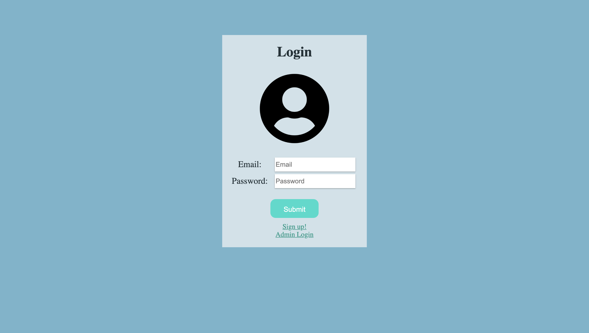
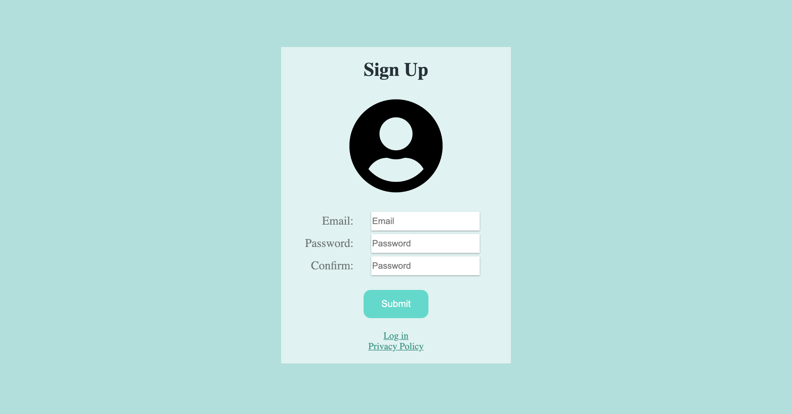
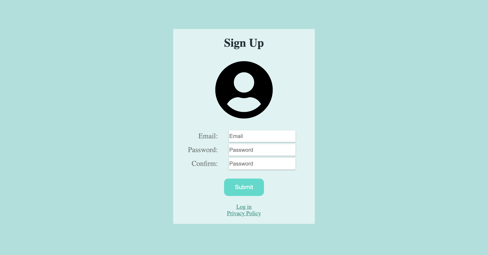
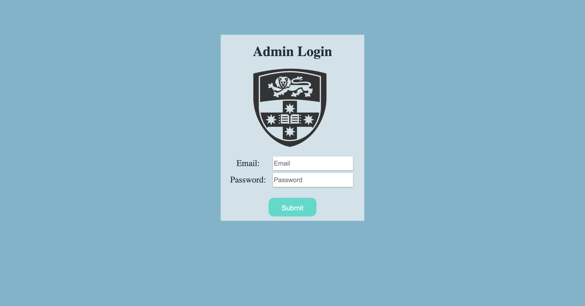
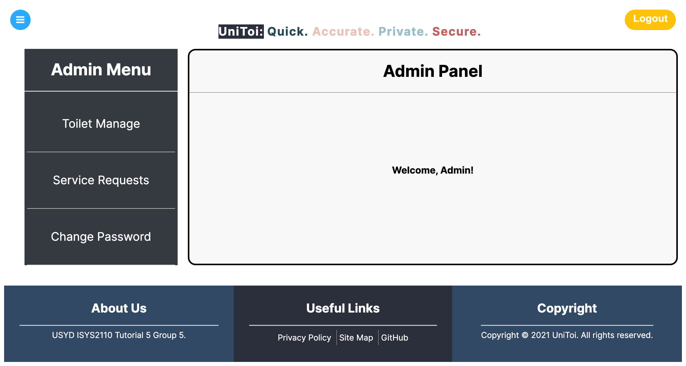
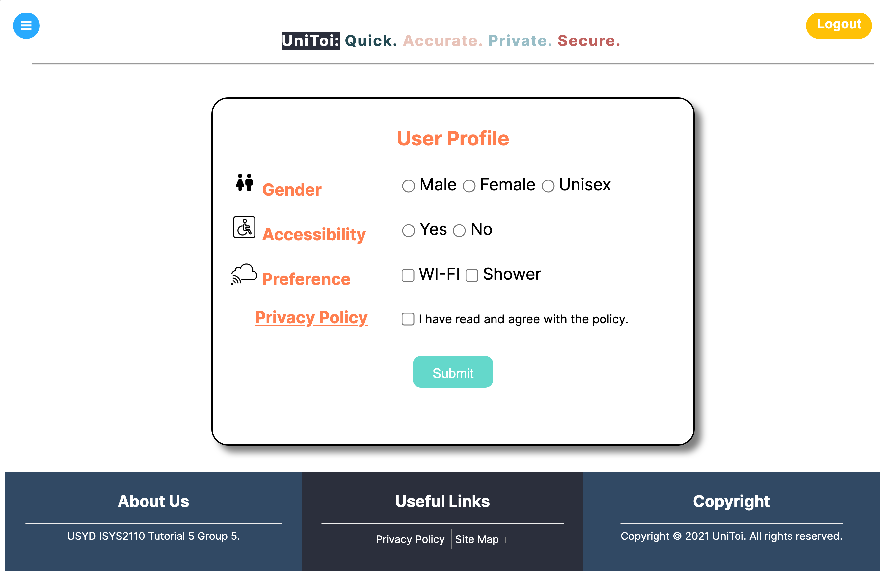
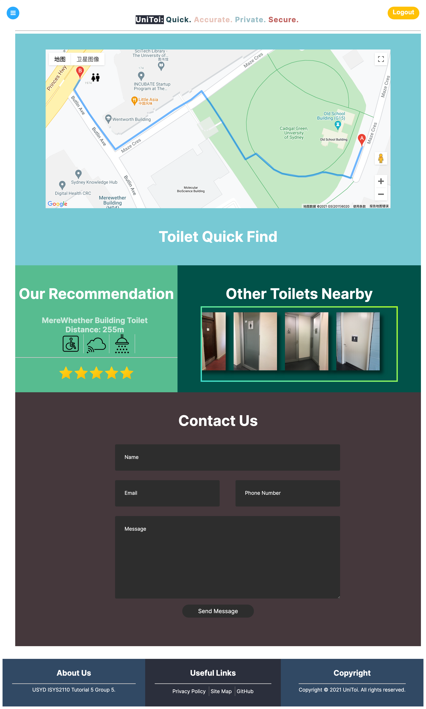
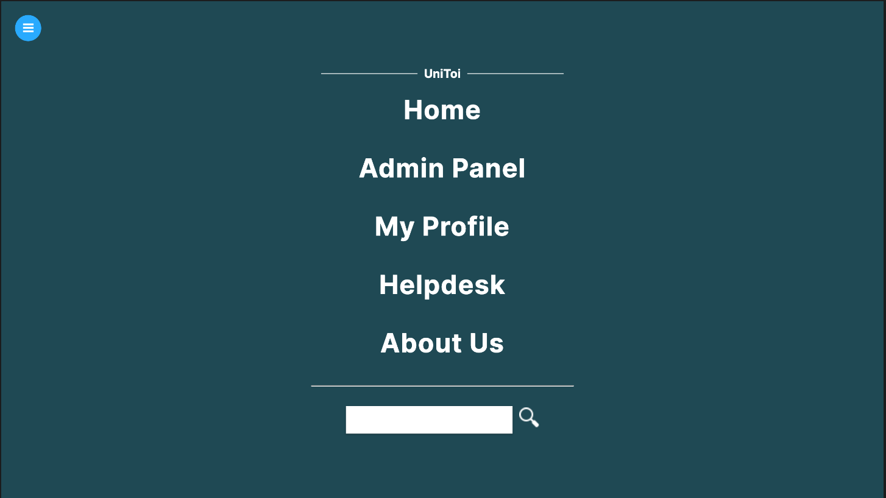
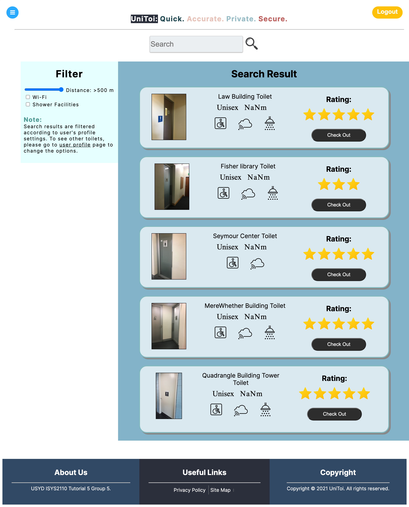
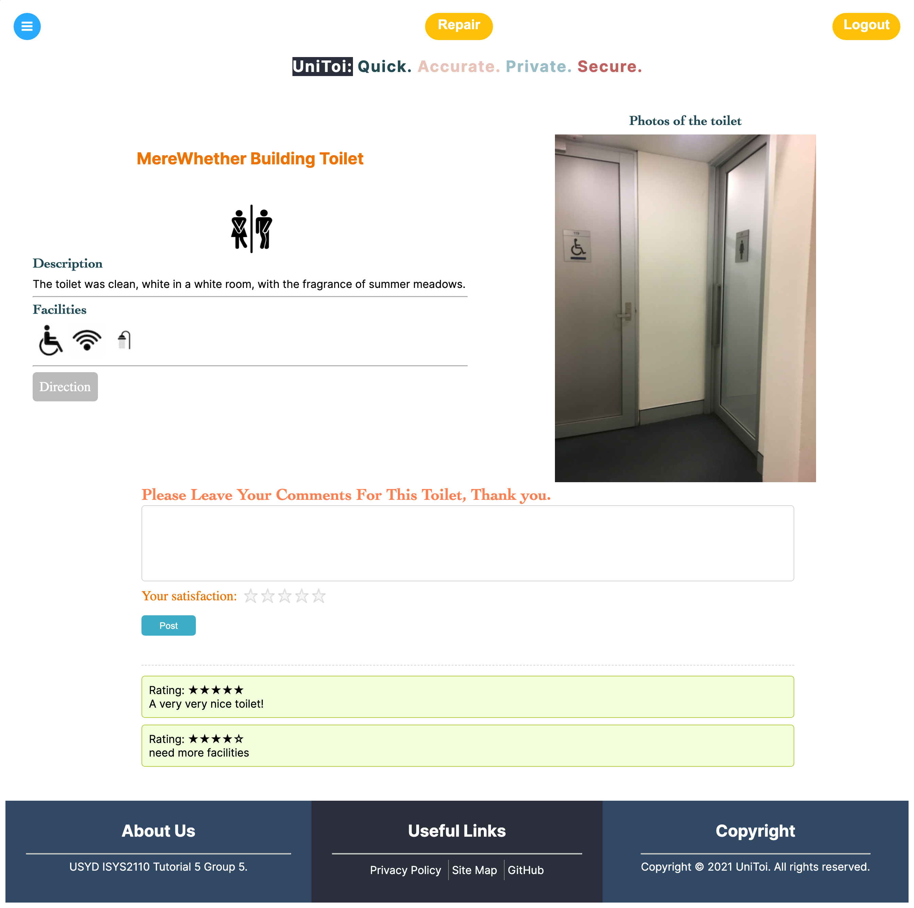

Login and Sign up



Login and Sign up
- Enter your email and password
- Click Submit to login
- If you haven't signed up already, please sign up first
- Enter valid information to create your account
- After signing up, you can successfully login to the system
Admin Login and Control panel


Admin Login
- You will be given the admin account and password to log in to the system as Admin
- Admin can manage the toilets(disable it and no longer can be found by user)
- Manage Service Request
- The admin can also manage the comments under each toilet
User Profile

User Profile
- When you log in to the system as a normal user, you will be asked to leave your current direction
- You will also need to choose your performance for the toilet
- The system will help you to find the most close and suitable toilet for you
Index and Navigation


Index and Navigation
- After finishing the profile setting, you will be recommended the nearest and most suitable toilet with direction
- You can also choose other nearby toilets instead of the recommended one
- You can leave your comments for our website through the "Contact Us" Part
- The navigation button is on the top left of each page, you can jump to other pages conveniently.
- You can search toilets through the Search Bar
Search Result

Search Result
- This page will show all the results that meet the criteria
- You can change the distance and facilities for the results
- You can checkout each toilet to get the detailed information
Toilet Details

.png)
Toilet Details
- This page shows the detailed information for the toilet, including the facilities, photos, description and comments
- You can request a repair for the toilet through the "Repair" button, then the admin can receive the request and disable the toilet
- You can leave comments and rate for this toilet, you can also see other's comments and ratings
- If you wanna go to this toilet, you can click the "Direction" button to get the direction of this toilet
- The "Go Back" button will bring you back to the toilet detail page
FAQ
- Allowed – What is allowed in the solids bucket?
In principle, only the solid waste, litter material and recyclable toilet paper should be added to the solids bucket. If you are considering composting, then food leftovers (e.g. coffee grounds) could also be added to it. - Bags – Which bags are suitable for the solids bucket?
Even if you are considering composting, it is recommended to use compostable sanitary bags or pouches made of strong paper for bio waste. When buying bags, look for the EU standard DIN EN 13432 symbol. And if you want to be on the safe side, request a datasheet for the bags from the manufacturer. - Diarrhea – Can I still use my dry composting toilet?
Yes, definitely! If you have a diarrheal disease, then it is recommended to add more litter, so that the additional accumulating fluid can be bound. However, composting of the solids should be avoided when you are ill.
Login and Sign up
Admin Login and Control
User Profile
Index and Navigation
Search Result
Toilet Details
FAQ
Back to the top